AI Academy · Level 2 · Grade 7 · Week 26 · Student lesson
Image and Voice Pipelines
Learn to understand, design, build, test and explain AI systems responsibly.
Project: Transparent Book Recommender
Before you start
Week 2: inspect information passed between stages.
Plan time to read, investigate and explain. Keep predictions separate from observations.
Student lesson · 1 of 16
Your mission
Your learning target
I can explain the mechanism and terminology of speech pipelines and multimodal evidence.
I can apply the stated procedure to a new case with a traceable result.
I can identify an assumption or limitation and design a revealing follow-up.
Remember before reading
Close your notes first. A rough first answer helps us choose the right starting point; it is not a score for your ability.
Without opening the old lesson, explain one key idea from Text as Pieces. Give an example and a mistake that the idea helps you avoid.
Without opening the old lesson, explain one key idea from Recommendation Scores. Give an example and a mistake that the idea helps you avoid.
Without opening the old lesson, explain one key idea from Repair Bias in Data. Give an example and a mistake that the idea helps you avoid.
After trying, check the relevant lesson or ask your teacher. Change the part of your explanation that the evidence shows was wrong.
Week 26: Image and Voice Pipelines
Perception systems transform signals through multiple fallible stages.
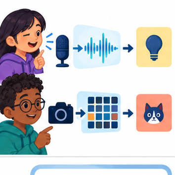
THINKER MISSION
Trace speech-to-command and image-to-label pipelines.
Thinker name and date:
Readiness for the connected explanation
Recall Image generation and provenance. Explain why a recorded result needs its input conditions and evidence source before it can support a claim.
This week’s end goal
By the end, I can trace where speech information changes and resolve a declared-authority conflict.
Student lesson · 2 of 16
Notice the evidence
PICTURE STORY
Notice → Predict → Explain
Begin with visible evidence. Do not explain more than the picture and information support.
MYSTERY
The learners must use image and voice pipelines to solve a problem. What information do they have? What decision or calculation do they make? What would count as evidence that it worked?
Three observations (what you can point to):
My prediction and the clue supporting it:
A closer explanation
A multimodal pipeline may transcribe speech, inspect an image and generate a response. Errors at one stage can propagate even when later stages run correctly.
Begin by writing the question the procedure is intended to answer. Identify the information already supplied, the information it will produce and the information still missing. These are constructed classroom examples; they do not require live accounts, private records or an external service. Do not treat a plausible explanation as a measured outcome.
Student lesson · 3 of 16
See how it works
VISUAL MECHANISM
Input → Process → Output
Trace the information. At each stage, ask what changed and how you could test it.
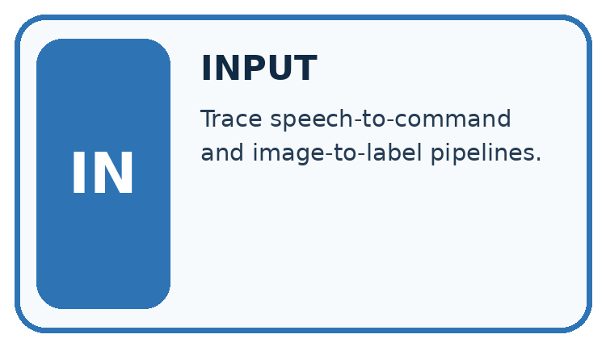
↓
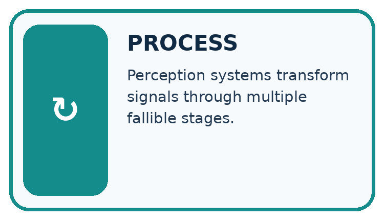
↓
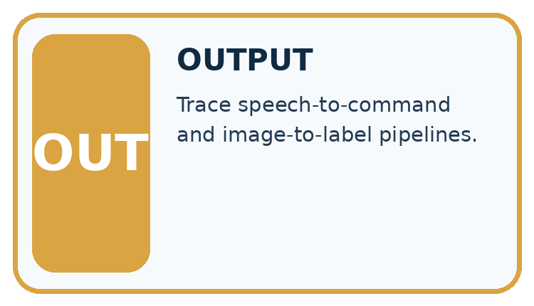
Which stage could fail even when the other two are correct? Explain:
A closer explanation
Track source modality, segment/time references, transcription, interpretation and final claims separately. Compare conflicting evidence without assuming one modality always wins. Ask for clarification when the task needs unresolved information.
Speech pipelines and multimodal evidence — evidence trace
Before applying the procedure, write its units, denominator or decision boundary where relevant. A partner should be able to repeat each step using the same inputs. If a required input is absent or violates the stated contract, record that condition explicitly instead of quietly replacing it with a convenient value.
Connect the picture and the explanation
Point to the input, the deciding step and the result in this week’s visual. Explain the same step in ordinary words. A picture helps when you can say what each part represents.
Student lesson · 4 of 16
Compare the cases
CASE GALLERY
Four Tests, Four Kinds of Evidence
A system is not understood until it survives more than one comfortable example.


NORMAL CASE: predict and name evidence. BOUNDARY CASE: predict and name evidence.


MISSING INFORMATION: predict and name evidence. TRANSFER CASE: predict and name evidence.
Which case is most likely to reveal a hidden assumption? Why?
Change one thing in the pictured case
Change: Remove access to the audio, while keeping the authoritative inventory.
Prediction: Shelf 14 remains supported for the lookup, but transcription accuracy cannot be replay-checked.
Reason: The inventory resolves the shelf task; it does not recreate unavailable audio.
Student lesson · 5 of 16
Words that unlock the idea
VOCABULARY LAB
Words You Can Use to Reason
A definition matters when you can recognize the idea, use it, and contrast it with a near-miss.
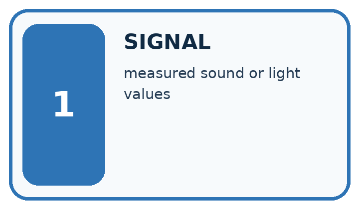
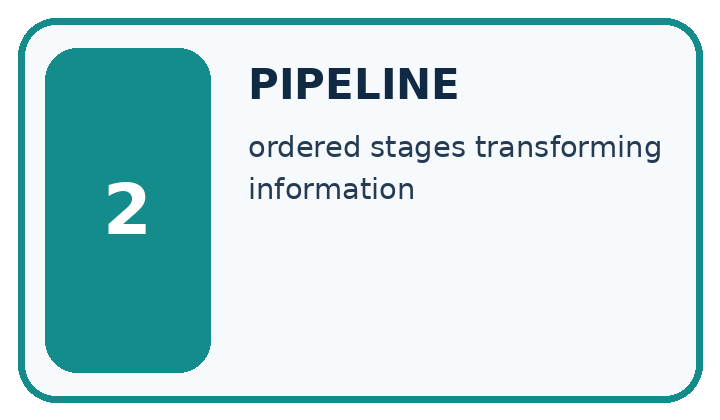
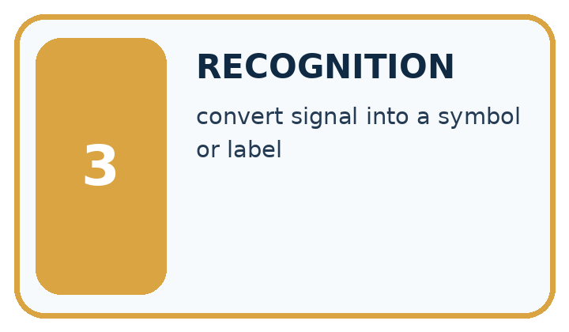
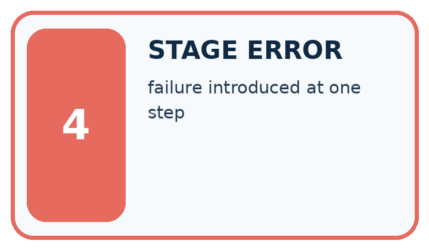
| Word | My own example | Not this / boundary |
|---|---|---|
| signal | A measurable quantity carrying information, such as changing sound pressure or light intensity. | |
| pipeline | A connected sequence of stages in which one stage's output becomes another's input. | |
| recognition | Interpreting an input as a known category or pattern rather than merely recording its signal. | |
| stage error | A failure introduced at a particular step of a pipeline. |
Words used in the closer explanation
| Word | Meaning |
|---|---|
| Modality | A form of information such as audio, image or text |
| Transcription | A text representation of speech |
| Error propagation | An earlier error affecting later processing |
Student lesson · 6 of 16
Follow a worked example
WORKED EVIDENCE
Reason Step by Step
Predict first. Then check each step. A correct answer without visible reasoning is incomplete evidence.
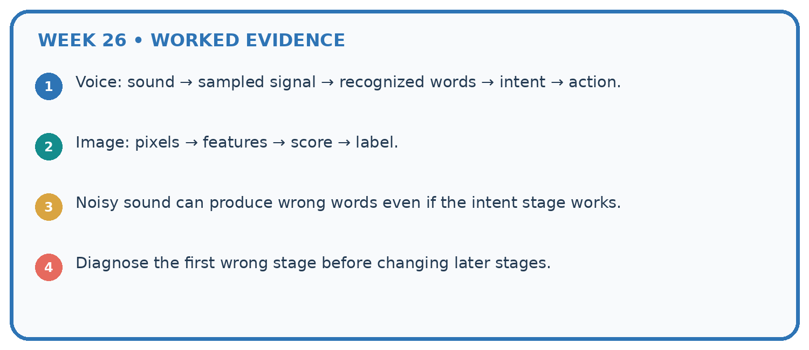
1. Voice: sound → sampled signal → recognized words → intent → action.
2. Image: pixels → features → score → label.
3. Noisy sound can produce wrong words even if the intent stage works.
4. Diagnose the first wrong stage before changing later stages.
Recalculate, retrace, or restate the reasoning in your own representation:
CHECK Did the evidence answer the exact question? Did the total, path, or source record stay consistent?
A closer explanation
Audio transcript reads fifteen boxes; a clear written inventory says fifty boxes. The original audio is unavailable and the assistant reports fifteen as certain.
There is an unresolved quantity conflict and no audio replay. Preserve both sources and ask the responsible person; certainty is unsupported.
Compare the intermediate evidence with the final statement. Explain why each number or decision follows from the stated inputs. The conclusion belongs to this scenario and procedure; changing the inputs, evaluation population or authority can change what it establishes. Retain the raw record so a later revision can be compared honestly.
Learn from the worked case
Cover the result before checking it. Say what is given, choose the procedure, and follow one step at a time. Then uncover the result and explain your first mismatch. Ask why a step is allowed, not only what number it produces.
A pictorial worked case: Image and Voice Pipelines
A fictional librarian dictates a shelf note that passes through transcription and catalogue lookup.
The facts we will use
Teacher-supplied ground truth audio phrase is “shelf fourteen”. Transcript says “shelf forty”.
A current signed inventory is declared authoritative and lists the requested book on shelf 14. The original audio recording remains available.

Read the picture one step at a time
Why this result follows
A correct later lookup cannot repair an earlier wrong input by magic. Locate the first difference between known audio and transcript, then compare the stated source authority. Keeping both records makes the correction auditable. A confident spoken answer for shelf 40 would remain wrong despite fluent synthesis.
What this example does not establish
Declared authority resolves this task’s source choice; it does not make every inventory entry universally accurate.
Read the labelled picture: Which stage first fails, and why should the faulty transcript not be silently overwritten?
Change one thing: Remove access to the audio, while keeping the authoritative inventory. Predict the result before checking the explanation. What remains the same?
Student lesson · 7 of 16
Find and repair a mistake
ERROR DETECTIVE
Compare → Diagnose → Repair
Do not patch the answer. Find the earliest unsupported assumption, wrong step, or weak evidence.
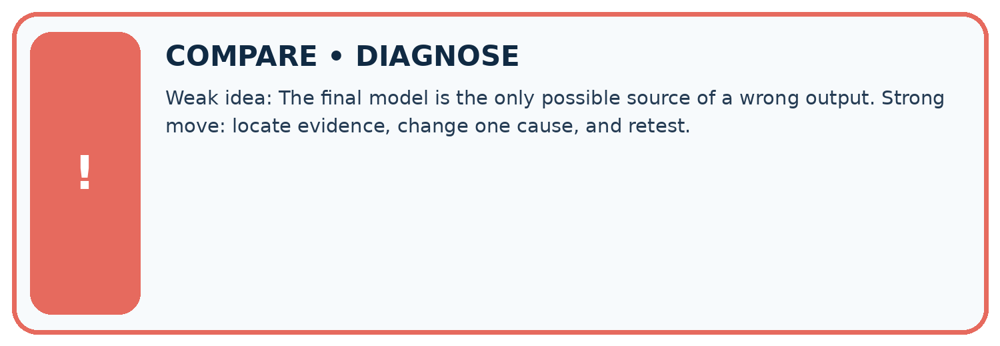
| Evidence record | Expected | Actual | Likely cause / next test |
|---|---|---|---|
| normal case | works | ||
| boundary case | stated rule | ||
| missing input | safe response | ||
| fresh transfer | generalizes |
Repair one cause. Why is this repair better than changing several things?
A closer explanation
Complete the supported workbook tasks before attempting W4 independently. Record any hints or help used. After feedback, use the teacher's fresh retry rather than copying the earlier answer. For a project, select a relevant new case, predict the outcome from the declared rule and preserve the result alongside any revision.
Student lesson · 8 of 16
Practise together
LOGIC STUDIO
Trace Before You Run
Block code, pseudocode, tables, and diagrams are different ways to expose the same reasoning.

SET evidence_record PREDICT expected_result RUN one normal case and one boundary case COMPARE actual_result with expected_result IF different: locate first cause; change one factor; RETEST EXPLAIN result, limitation, and next safe step
Trace one input. Which line changes the state or chooses a path?
A closer explanation
A stage-level accuracy or authority policy does not establish every modality agrees or every downstream claim is supported.
A useful check asks what would make the reasoning fail. Distinguish a failure to execute the declared procedure from a weakness in the procedure itself. The first may require a correction; the second requires an explicitly revised method and new evidence. Preserve unsuccessful cases so an improved result cannot hide the original problem.
Practise with less help: Trace the worked case
Use workbook W2 for the connected example “Speech pipelines and multimodal evidence”. First fill the input and rule boxes. Try the middle steps before asking for a hint. After a hint, try the next step yourself.
| Plan | Do | Check |
|---|---|---|
| What is given? Which rule or procedure applies? | Record each intermediate step. | Does the result follow? What remains unknown? |
Explain your trace to a partner. Your partner points to one step to check. Swap roles on the next case. Each person writes their own explanation.
Check your reasoning
Use the worked case for Speech pipelines and multimodal evidence. Proposed explanation: “The worked result establishes every future case”. Decide whether this explanation is supported. Point to the step or supplied fact that decides; explain your repair if needed.
Answer on your own before discussion. If you are unsure, say which step you need help with.
Explain the picture
Which stage first fails, and why should the faulty transcript not be silently overwritten?
This is supported practice. Keep the separately named independent case for an attempt before feedback.
Student lesson · 9 of 16
Run the investigation
EVIDENCE LAB
Predict → Test → Record → Explain
Keep expected and actual results separate. Surprises are useful data when recorded honestly.
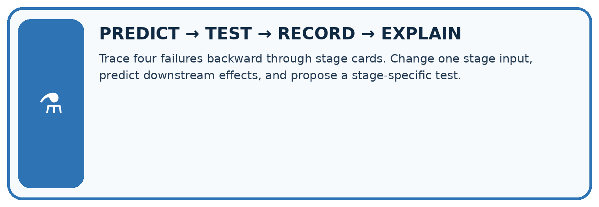
Trace four failures backward through stage cards. Change one stage input, predict downstream effects, and propose a stage-specific test.
| Test / input | Prediction | Actual | Evidence / calculation | Change or keep? |
|---|---|---|---|---|
| normal | ||||
| boundary | ||||
| missing | ||||
| fresh transfer |
What did the hardest test teach you that the normal test did not?
Plan → try → check
Before trying: what do I expect, and why? While trying: which step could first go wrong? Afterwards: what did I actually observe, and what should change? Keep “not run” if you only traced the procedure.
Student lesson · 10 of 16
Build your understanding
MASTERY
From Knowing the Word to Owning the Idea
Move upward only when you can produce evidence without copying the worked example.

1 • NAME: Define the concept without repeating the textbook.
2 • TRACE: Show the information, state, branch, calculation, or evidence path.
3 • APPLY: Solve a different example independently.
4 • CHALLENGE: Find a boundary case, counterexample, or unfair outcome.
5 • EXPLAIN LIMITS: Say when the result should not be trusted or used alone.
My strongest evidence of independent understanding:
Student lesson · 11 of 16
Connect your project
CUMULATIVE PROJECT
Transparent Book Recommender
Every week adds one inspectable piece. The system must show how it reached a result.
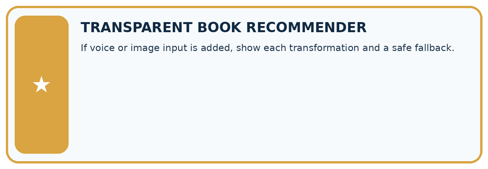
THIS WEEK’S CHECKPOINT If voice or image input is added, show each transformation and a safe fallback.
SYSTEM MAP Reader need → allowed inputs → transparent rule or score → ranked candidates → explanation → test record → human decision
What will you add, change, or verify in the project this week?
What should remain under human control?
RESPONSIBLE DESIGN Collect only necessary information. Show uncertainty and limits. Never confuse a ranking with a fact about a person.
Evidence for your project
For voice-driven recommendations, confirm important recognised fields before searching or acting and retain source provenance.
Student lesson · 12 of 16
Show what you know
INDEPENDENT MASTERY PROOF
Explain • Transfer • Test • Defend
Complete this page without copying the worked example. Your reasoning matters more than decoration.
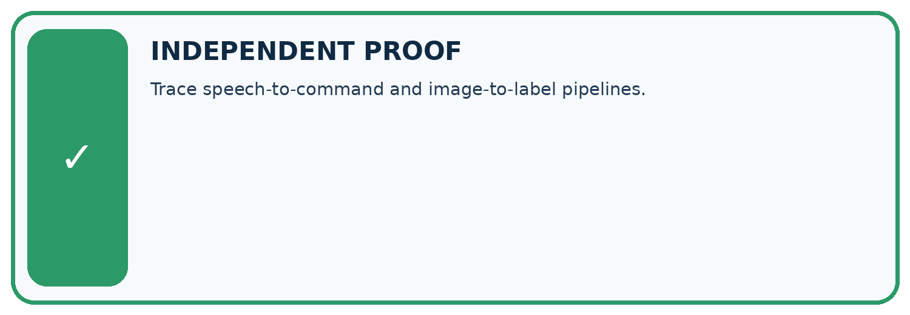
CHALLENGE Trace speech-to-command and image-to-label pipelines.
1. My fresh example, trace, calculation, or design:
2. My evidence that it works (include a boundary or missing-data case):
3. One limitation, fairness concern, or situation needing human review:
SELF-CHECK □ I explained the mechanism □ I used evidence □ I tested a fresh case □ I named a limitation □ I can answer ‘why?’
Student lesson · 13 of 16
Study a complete case
Week 26 Worked case
Use the supplied details to practise the weekly concept before attempting the independent question. This case extends the illustrated lesson.
The situation
A voice book helper transcribes speech, extracts preference, then ranks books.
The question
Where can a wrong suggestion begin?
Worked explanation
Transcription can mishear poetry and pass the wrong preference downstream. Check intermediate results.
Explain it in your own words
Which detail supports the answer, and why does it matter?
Trace the supplied case visually
Locate the first error in a voice pipeline
| Evidence or stage | Value or result |
|---|---|
| Speech | Reader says poetry |
| Transcript | May mishear the preference |
| Extract | Uses the transcript's genre |
| Rank | Wrong input can produce a wrong suggestion |
A voice book helper transcribes speech, extracts preference, then ranks books.
Where can a wrong suggestion begin?
Transcription can mishear poetry and pass the wrong preference downstream. Check intermediate results.
Student lesson · 14 of 16
Try a new case independently
Independent case: Apply a new case independently
Transcript says room E; a current written approval says room F. The task requires current approved room. Written approval is declared authoritative; trace the response and the transcription limit.
Attempt this case before feedback. Record any help. Earlier examples below are further practice; a case already practised with feedback cannot establish fresh transfer.
Week 26 Independent application
Close the worked explanation. Apply the idea to this different question without copying.
A voice helper hears find a book, converts speech to text, then searches. It writes find a cook. Which stage first failed and what should you inspect?
My answer, with a trace, calculation or supporting evidence
Create and test
Change one relevant detail. Predict the result before testing. Include a boundary or missing-information case when it helps reveal a limit.
My changed input and expected result
Connect to your project
If voice or image input is added, show each transformation and a safe fallback.
The evidence I will keep
Your teacher has the independent answer and scoring criteria. Complete the matching workbook week to keep your practice evidence together.
Transfer practice from the original programme
A voice request says 'under 90 pages'. The transcript says 'under 19 pages'; filtering correctly finds no books. Identify the first failing stage and a useful confirmation step.
Use feedback to improve
Attempt the independent case before hints. Record whether you worked alone, used a hint or followed a model. After feedback, fix the first unsupported step and explain why it changed. A later check uses a changed case, not a copied answer.
Student lesson · 15 of 16
Your lesson route
Start with this question: A fictional librarian dictates a shelf note that passes through transcription and catalogue lookup.
| By the end, I can | How I will show it |
|---|---|
| Explain the mechanism and terminology of speech pipelines and multimodal evidence | Explain the deciding step, show a trace or test, and state one limit. |
| Apply the stated procedure to a new case with a traceable result | Explain the deciding step, show a trace or test, and state one limit. |
| Identify an assumption or limitation and design a revealing follow-up | Explain the deciding step, show a trace or test, and state one limit. |
Remember → watch and explain → try with help → investigate → try independently → keep project evidence. Your teacher may spread this lesson across several classes.
Keep your first prediction. Compare it with what the evidence shows and explain any change.
Student lesson · 16 of 16
Finish and return
Close your notes. Explain this goal in your own words: Explain the mechanism and terminology of speech pipelines and multimodal evidence
If you are unsure, return to the worked picture and explain one arrow. If you are ready, change an input or assumption and justify your prediction.
Save your workbook evidence. At the next review, try a different case before opening your old answer.